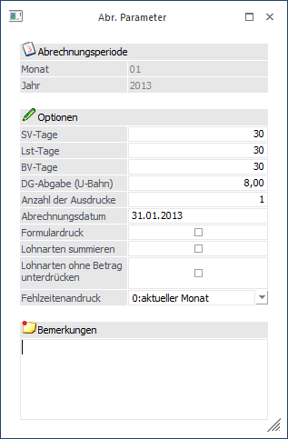

Die Parameter, die vorerst für den gesamten Mandanten Gültigkeit haben können im Programmpunkt
1 Abrechnung
1 Parameter
festgelegt werden.
Im obersten Teil des Fensters ist das aktuelle Abrechnungsmonat und das aktuelle Abrechnungsjahr ersichtlich.

Eingabefelder
Grundsätzlich werden die Werte aus der letzten Abrechnungsperiode vorgeschlagen, können aber von Monat zu Monat individuell geändert werden.
Ø SV-Tage
Eingabe der sozialversicherungspflichtigen Tage des Abrechnungsmonats. Grundsätzlich müssen alle Monate mit 30 SV-Tagen abgerechnet werden. Eine wöchentliche Abrechnung ist nicht zulässig.
Ø LSt-Tage
Eingabe der lohnsteuerpflichtigen Tage für den Abrechnungsmonat. Die LST-Tage sind in der Regel von den SV-Tagen abhängig. Wurde die Anzahl der SV-Tage geändert wird diese Zahl auch bei den LST-Tagen vorgeschlagen.
Ø BV-Tage
Eingabe der BV-Tage, die standardmäßig verwendet werden sollen. Diese Anzahl wird von den Einstellungen im AN-Stamm übersteuert (bei Eintritt während des Monats).
Ø Dienstgeberabgabe
Eingabe der Dienstgeberabgabe (U-Bahn-Steuer), die der Arbeitgeber pro Arbeitnehmer abführen muss. Beim Erstellen der Abrechnungsparameter für eine neue Abrechnungsperiode wird die Dienstgeberabgabe (U-Bahn-Steuer) automatisch berechnet und vorgeschlagen.
Ø Anzahl Ausdrucke
Hier kann die Anzahl der Ausdrucke der Abrechnungsbelege festgelegt werden. Z.B. bei Eingabe von 2 wird die Abrechnung pro Arbeitnehmer zweimal ausgedruckt.
Ø Abrechnungsdatum
Eingabe des Abrechnungsdatums. Dieses Datum wird auch auf alle AN übertragen und kann in den AN-spezifischen Parametern geändert werden.
Ø Formulardruck
Wir die Checkbox aktiv gesetzt, können die Abrechnungen auf Formularen (Lohnbelege oder Lohnkuverts) ausgedruckt werden. Ist die Checkbox inaktiv, werden die Abrechnungen auf Blankopapier gedruckt.
Ø Lohnarten Summieren
Wenn die Checkbox aktiviert wird, werden gleiche Lohnarten (z.B. Grundlohn für Arbeiter wird für verschiedene Kostenstellen mehrfach erfasst) auf eine zusammengezogen. Voraussetzung dafür ist, dass gleiche Lohnartennummern z.B. 1 verwendet werden.
Hinweis:
Wenn diese Option aktiviert ist, dann wird der Satz beim Ausdruck des Abrechnungsbeleges aus Gesamt durch Anzahl Stunden errechnet. D.h. es kann ggf. zu einer Differenz gegenüber der Erfassungszeile geben. Diese Berechnung ist dann notwendig, wenn innerhalb von gleichen Lohnarten unterschiedliche Sätze verwendet werden.
Beispiel:
In der Erfassungszeile werden folgende Werte hinterlegt:
Stunden = 1,5
Satz = 9,1298
Betrag = 13,69 (gerundet auf 2 Nachkommastellen).
Ausdruck am Abrechnungsbeleg mit der Option "Lohnarten Summieren" (sofern auch 4 Nachkommastellen am Abrechnungsbeleg angedruckt werden):
Stunden = 1,5 (wie in Erfassungszeile)
Satz = 9,1267 (Division aus 13,69 durch 1,5)
Betrag = 13,69
Ø Lohnarten ohne Betrag unterdrücken
Grundsätzlich werden alle Erfassungszeilen, bei denen einer der Werte STUNDEN, SATZ oder BETRAG ungleich NULL ist, auf der Abrechnung angedruckt. Wird die Checkbox "Unterdrückung von Lohnarten ohne Betrag" aktiviert, werden nur jene Erfassungszeilen auf der Abrechnung angedruckt, bei denen der Wert GESAMT ungleich NULL ist.
Ø Fehlzeitenandruck
Aus der Auswahllistbox kann gewählt werden, welche Fehlzeiten auf der aktuellen Abrechnung angedruckt werden sollen. Dabei gibt es folgende Optionen:
ü aktueller Monat
Mit dieser
Option werden nur die Fehlzeiten angedruckt, die für das aktuelle
Abrechnungsmonat erfasst wurden. Diese Option macht nur dann Sinn, wenn die
Abrechnung am Ende eines Monats (wenn schon alle Fehlzeiten erfasst wurden)
durchgeführt wird. Diese Option ist auch die Standardeinstellung.
ü aktueller Monat und
Vormonat
Mit dieser Option werden die Fehlzeiten des aktuellen Monats und des
Vormonats angedruckt. Bei dieser Option kann es vorkommen, dass dann Fehlzeiten
auf 2 unterschiedlichen Abrechnungen vorhanden sind (wenn z.B. eine Fehlzeit für
März noch vor der März-Abrechnung erfasst wurde).
ü Vormonat
Mit dieser Option
werden die Fehlzeiten des Vormonats (Abrechnungsperiode - 1) ausgegeben. Diese
Option ist dann sinnvoll, wenn die Abrechnung im Vorhinein (am Anfang des
Monats) gemacht wird und somit noch nicht alle Fehlzeiten des Monats bekannt
sind.
Ø Bemerkung
Eingabe einer Anmerkung, die auch bei der Abrechnung angedruckt werden kann.
Durch Drücken der F5-Taste werden, sofern diese Einstellungen zum ersten Mal in der aktuellen Abrechnungsperiode gemacht wurden, auf alle AN kopiert. Diese Einstellungen können dann pro AN über die Einzelabrechnung verändert werden (wenn z.B. der AN mitten im Monat eingetreten ist und daher die SV-Tage verändert werden müssen). Die hier vorgenommen Einstellungen werden auch als Vorschlag für die nächste Abrechnungsperiode verwendet.